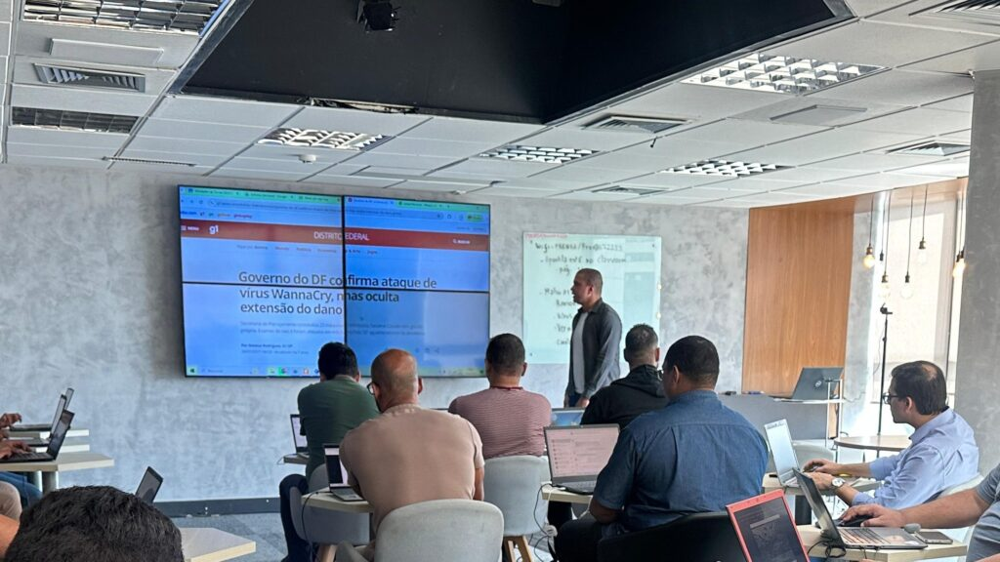

Formação avançada, pesquisa aplicada e inovação estratégica. Pós-graduações Lato Sensu em regime de residência para os desafios mais críticos da segurança da informação.
480h
Carga Horária
360h Aulas + 120h Práticas
UFPE
Chancela Oficial
Líder N/NE em Computação
4 Cursos
Especializações
Blue, Red, GRC & Cloud
Híbrido
Formato Flexível
RioMar Trade + Online
Os Três Pilares das Pós-Graduações CEIC
Metodologia diferenciada inspirada na residência profissional: 360 horas de aulas teóricas e práticas em laboratório + 120 horas de imersão extra-classe focadas em desafios reais do mercado.
Turmas fechadas com rigor acadêmico vinculadas diretamente à Universidade Federal de Pernambuco, principal referência de pesquisa e tecnologia nas regiões Norte e Nordeste.
Certificação de Pós-Graduação Lato Sensu emitida pela UFPE, com segurança gráfica, autenticidade garantida por registro acadêmico e validade em todo o território nacional.
Quatro formações de vanguarda projetadas para atender as principais demandas do ecossistema moderno de cibersegurança.
Objetivo do Programa
Desenvolvimento de competências técnicas e estratégicas para viabilizar a confidencialidade, integridade e disponibilidade das informações organizacionais.Esta disciplina visa orientar o profissional a identificar e aproveitar oportunidades de negócios voltados à área de Defesa Cibernética. O módulo busca abordar aspectos relacionados às oportunidades profissionais, comerciais e institucionais atribuídas à atuação em segurança defensiva, com ênfase na construção de networking estratégico. A ementa contempla conceitos de liderança, gestão de equipes de resposta a incidentes, administração de operações de segurança, marketing de serviços de cibernética e networking aplicado ao ecossistema de Blue Team.
Classificar os notórios programas maliciosos (malware): incluindo vírus, worm, trojan, spyware, backdoor, rootkit e outras variedades. Expor as insuficiências dos programas antivírus do mercado no que tange à eficiência e escalabilidade de seus recursos em monitoramento contínuo.
Suprir as limitações e imprecisões dos antivírus comerciais através da análise do código-fonte do arquivo suspeito. A análise estática do malware é capaz de identificar o modus operandi de uma praga virtual antes mesmo dela ser executada pelo usuário. Infectar, propositalmente, o Sistema Operacional auditado, em tempo real (dinâmico). A análise dinâmica visa monitorar todos os processos gerados pelo malware, arquivos criados, excluídos e baixados por ele durante sua execução, além do rastreamento do tráfego de rede. A presente ementa visa apresentar: sandbox, cuckoo box, auditoria de malware em tempo real. Por fim, devem ser empregadas técnicas de redes neurais artificiais visando o reconhecimento de padrão de malware.
A disciplina foca na criação e operação de um SOC (Security Operations Center). A disciplina explora a arquitetura, as funções e o uso de ferramentas essenciais para monitoramento e detecção, como SIEM e SOAR, além de como definir métricas de desempenho para demonstrar valor.
Estudo dos fundamentos e práticas de Gestão de Ameaças e Vulnerabilidades, com ênfase em estratégias de inteligência contra ameaças (CTI – Cyber Threat Intelligence ). O objetivo é desenvolver competências técnicas e estratégicas em defesa cibernética, monitoramento, resposta a incidentes e resiliência organizacional, alinhadas às demandas atuais de segurança da informação e às boas práticas recomendadas por frameworks como MITRE ATTACK (adotado defensivo).
Estudo das ameaças e ataques em redes de computadores, com foco em práticas de defesa cibernética. Aborda vetores de ataque, técnicas de mitigação, segurança em múltiplas camadas do modelo TCP/IP, controle de acesso, gerenciamento seguro de dispositivos, autenticação, autorização e contabilidade (AAA), tecnologias de firewalls, ferramentas de monitoramento de rede, e redes privadas virtuais (VPNs).
Esta disciplina visa apresentar elementos legais e da Ciência da Computação visando coletar e analisar dados de: sistemas computacionais, redes e dispositivos de armazenamento de modo a constituir evidências admissíveis em um tribunal jurídico. O módulo também visa a Antiforense digital as quais são técnicas de remoção, ocultação e subversão de evidências com o objetivo de dificultar a análise forense. A ementa apresenta: recuperação de dados formatados; Ferramentas Foremost, Scalpel, MagicRescue e DECA. Adicionalmente, são empregadas técnicas de machine learning visando o reconhecimento de padrão dos clusters atrelados a arquivos formatados.
Capacitar profissionais para coletar, analisar e interpretar informações de fontes abertas, aplicando métodos e ferramentas de OSINT em diversos contextos: cibersegurança, investigação criminal, inteligência empresarial, localização de pessoas e análise de ameaças.
A disciplina tem como objetivo apresentar o conjunto de processos metódicos de investigação utilizados por pesquisadores e profissionais da área de defesa cibernética para o desenvolvimento de estudos aplicados em segurança da informação. Busca orientar a formulação de hipóteses e problemas de pesquisa relacionados a incidentes, vulnerabilidades e estratégias defensivas, empregando análises qualitativas e quantitativas. Aborda a aplicação do método científico em projetos voltados ao Blue Team, incluindo elaboração de relatórios técnicos e acadêmicos, utilizando as métricas e indicadores de desempenho (KPI) em resposta a incidentes, além de técnicas de redação científica. A ementa contempla ainda noções de produção acadêmica e profissional, tais como classificação de artigos, elaboração de monografias, dissertações e apresentações públicas de trabalhos técnico-científicos voltados à segurança defensiva.
esta disciplina foca na primeira linha de defesa. Aborda a configuração e operação de firewalls de próxima geração para inspecionar, monitorar e controlar o tráfego de rede, protegendo a empresa contra ameaças externas e internas.
A disciplina Introdução à Segurança Quântica apresenta os fundamentos da informação e comunicação quântica aplicados à segurança da informação. São abordados conceitos essenciais como qubits, superposições e emaranhamentos, bem como protocolos de distribuição de chaves quânticas (QKD), incluindo BB84, E91 e variações mais recentes. A disciplina discute ainda o impacto dos algoritmos quânticos na criptografia clássica, a evolução da criptografia pós-quântica e a integração de soluções quânticas em redes de telecomunicações. O objetivo é fornecer ao aluno uma visão estratégica e técnica sobre os desafios e oportunidades da segurança quântica, preparando-o para compreender o papel dessas tecnologias no futuro da cibersegurança.
Apresentar os fundamentos, conceitos e práticas da contra inteligência aplicada ao ambiente organizacional e ao ciberespaço. Discutir o papel da contra inteligência na proteção de informações sensíveis, prevenção de espionagem, sabotagem, vazamentos e infiltrações internas. A disciplina também contempla práticas de contra medidas digitais, como técnicas de desinformação, ocultação de ativos críticos e solicitação de remoção de informações sensíveis indexadas por motores de busca (Google, Bing, entre outros).
Objetivo do Programa
Desenvolvimento de competências e habilidades da área de Segurança da Informação, capacitando um profissional responsável pela integridade e resguardo de informações das organizações, protegendo-as contra acessos não autorizados nas pequenas, médias e grandes empresas do mercado.Classificar os notórios programas maliciosos (malware): incluindo vírus, worm, trojan, spyware, backdoor, rootkit e outras variedades. Expor as insuficiências dos programas antivírus do mercado no que tange à eficiência e escalabilidade de seus recursos em monitoramento contínuo.
Capacitar profissionais para coletar, analisar e interpretar informações de fontes abertas, aplicando métodos e ferramentas de OSINT em diversos contextos: cibersegurança, investigação criminal, inteligência empresarial, localização de pessoas e análise de ameaças.
Este curso cobrirá a pesquisa e avaliação de redes e hosts alvo para vulnerabilidades de Segurança. Testes de penetração específicos e metodologias de hacking ético. A presente ementa visa discutir aspectos relacionados à preparação de um trabalho de Pentest; Apresentar técnicas e cenários de ataque através da exploração de vulnerabilidades identificadas em aplicações WEB; discutir e modelar cenários de ataques e possíveis impactos para o negócio no qual um Pentest / Ethical Hacking está sendo executado.
Esta disciplina apresenta uma abordagem metódica para lidar com as consequências de uma violação de Segurança (ou incidente). Além disso, ele oferece uma análise abrangente dos recursos de malware como um fator crítico na capacidade de uma organização de reunir inteligência sobre ameaças, responder a incidentes de Segurança da Informação e estabelecer defesas. A disciplina incluirá uma análise aprofundada das ferramentas e processos necessários para se preparar e lidar com incidentes de forma que os danos sejam limitados e o tempo de recuperação seja ideal. A presente ementa visa apresentar conceitos de incidentes de Segurança, motivação e tipo; Analisar exemplos de casos reais de incidentes, destacando sintomas úteis para sua identificação precoce; Discutir as etapas de resposta a incidentes; Enumerar e discutir a natureza e escopo do serviço de tratamento de incidentes, suas funções, como elas se relacionam, ferramentas, procedimentos e papéis necessários para a implementação correta deste serviço; Avaliar os aspectos relevantes da constituição do time operacional de resposta a incidentes, com foco na formação e manutenção desta equipe.
Esta unidade curricular pretende compreender a importância da Criptografia como alternativa para a implementação da Confidencialidade, Integridade, Autenticidade ou Não Repúdio de informação armazenada em computadores ou que trafegue em redes informáticas. Além disso, identificar diferentes métodos criptográficos, protocolos, algoritmos, assinaturas e certificados digitais e o uso da criptografia como componente de autenticação e serviços de controle de acesso; identificar a solução de criptografia mais adequada para cada implementação, de acordo com suas particularidades. Conforme os temas trabalhados nas disciplinas, teremos a abordagem do uso da criptografia para garantir os requisitos de Segurança da Informação, sistemas e transações eletrônicas, abrangendo uma introdução à origem da criptografia; a importância da criptografia para a Segurança de sistemas e informações, algoritmos criptográficos, assinaturas digitais e certificados; certificados de atributos; Segurança de rede; mídia criptográfica; identificadores biométricos; CiberSegurança; e impactos na sociedade contemporânea. A ementa visa propiciar ao aluno conhecimentos relacionados, a: Histórico da Criptografia e Motivação, Técnicas de Criptoanálise, Algoritmos de Criptografia Simétricos, Algoritmos de Criptografia Assimétricos, Infraestrutura de Chaves Públicas, e Ferramentas de Criptografia Aplicada.
Classificação em marca d’água digital. Fundamentos de marca d’água digital. Ataques e ferramentas em marca d’água. Fundamentos de esteganografia e esteganálise. Ocultação de dados em informação multimídia. Ocultação de dados em redes de comunicação.
Esta disciplina visa apresentar elementos legais e da Ciência da Computação visando coletar e analisar dados de: sistemas computacionais, redes e dispositivos de armazenamento de modo a constituir evidências admissíveis em um tribunal jurídico. O módulo também visa a Antiforense digital as quais são técnicas de remoção, ocultação e subversão de evidências com o objetivo de dificultar a análise forense. A ementa apresenta: recuperação de dados formatados; Ferramentas Foremost, Scalpel, MagicRescue e DECA. Adicionalmente, são empregadas técnicas de machine learning visando o reconhecimento de padrão dos clusters atrelados a arquivos formatados.
Esta disciplina visa orientar o empreendedor a obter sucesso em negócios relativos à Segurança da Informação. O módulo visa explicar detalhes quanto à oportunidade profissionais, comerciais e pessoais atrelados à construção de networking. A ementa apresenta conceitos quanto à: liderança, gestão, administração, marketing empresarial e networking.
Estudo aplicado de técnicas e processos de inteligência de ameaças focadas em camadas ocultas da internet (deep/dark web) e em plataformas de mensageria e comunidades (Telegram, Discord). A disciplina aborda ferramentas de monitoramento, análise de TTPs (táticas, técnicas e procedimentos), mapeamento de infraestrutura maliciosa e produção de relatórios de inteligência com atenção rigorosa aos aspectos legais e éticos.
Determinar o conjunto de processos metódicos de investigação utilizados por um pesquisador para o desenvolvimento de um estudo. Levantar as hipóteses que darão suporte para a análise feita pelo pesquisador (resposta ao problema). Quando à abordagem do problema a ser resolvido, definir análises qualitativas e quantitativas. A ementa visa apresentar conceito Qualis; dissertação; confecção de monografia; defesa pública de trabalho científico/acadêmico.
A presente disciplina tem como objetivo avaliar dispositivos de rede, máquinas clientes e equipamentos móveis, discutindo aspectos fundamentais para a preparação e execução de um trabalho de Pentest. Serão abordadas técnicas e cenários de ataque voltados à exploração de vulnerabilidades identificadas, de modo a proporcionar ao discente uma visão prática e aplicada do processo de teste de intrusão.
Esta disciplina visa apresentar noções jurídicas básicas sobre Segurança da Informação. O módulo visa explicar detalhes quanto à Lei Nº 13.709/2018 – LGPD (Lei Geral de Proteção de Dados) e DPO ( Data Protection Officer – Oficial de Proteção de Dados).
Objetivo do Programa
Práticas reais da iniciativa privada com bases metodológicas robustas, abordando, entre outros temas: networking, empreendedorismo e arquiteturas multicamadas de defesa cibernética.O aluno será desafiado a gerenciar uma crise cibernética simulada, comunicando-se com a alta gestão e apresentando um plano de defesa abrangente para proteger o negócio. Adicionalmente, a disciplina apresenta conceitos e práticas de empreendedorismo aplicados à segurança da informação, com foco na criação de soluções inovadoras em arquiteturas de camadas de cyber-proteção.
Classificar os notórios programa maliciosos (malware); incluindo vírus, worm, trojan, spyware, backdoor, rootkit e outras variedades. Expor as insuficiências dos programas antivírus do mercado no que tange à eficiência e escalabilidade de seus recursos em monitoramento contínuo.
Capacitar profissionais para coletar, analisar e interpretar informações de fontes abertas, aplicando métodos e ferramentas de OSINT em diversos contextos: cibersegurança, investigação criminal, inteligência empresarial, localização de pessoas e análise de ameaças.
A disciplina foca na segurança dos dispositivos finais. O EDR ( Endpoint Detection and Response ) é uma tecnologia de segurança voltada especificamente para os dispositivos finais, como computadores, servidores e dispositivos móveis. O XDR ( Extended Detection and Response ) representa uma evolução do EDR. Enquanto o EDR concentra-se exclusivamente no endpoint, o XDR amplia a visibilidade ao integrar múltiplas camadas de defesa, como e-mail, rede, identidade de usuários e serviços em nuvem, além do próprio endpoint. A disciplina aborda o uso de plataformas EDR/XDR para caça a ameaças, análise de comportamento e resposta automatizada a incidentes no endpoint.
A disciplina integra a segurança ao ciclo de vida de desenvolvimento de software (SDLC). O foco é em AppSec, modelagem de ameaças e práticas de segurança para viabilizar que as aplicações sejam construídas de forma segura.
Esta disciplina aborda a proteção dos dados em si, independentemente de onde estejam. Foco em classificação de dados, tecnologias de criptografia e prevenção de perda de dados (DLP – Data Loss Prevention).
A disciplina apresenta a estrutura e as funções de um Security Operations Center (SOC), explorando o papel desse ambiente na centralização e coordenação das atividades de segurança. São discutidas as plataformas SIEM (Security Information and Event Management) e SOAR (Security Orchestration, Automation and Response), destacando seus recursos de correlação de eventos e automação de tarefas de resposta. Também é abordado o ciclo de vida da resposta a incidentes (IR), desde a detecção até a contenção, erradicação e recuperação. Por fim, a disciplina contempla o gerenciamento de vulnerabilidades e a análise de indicadores de comprometimento (IoC), enfatizando sua importância para a antecipação e mitigação de ameaças cibernéticas.
Determinar o conjunto de processos metódicos de investigação utilizados por um pesquisador para o desenvolvimento de um estudo. Levantar as hipóteses que darão suporte para a análise feita pelo pesquisador (resposta ao problema). Quando à abordagem do problema a ser resolvido, definir análises qualitativas e quantitativas. A ementa visa apresentar conceito Qualis; dissertação; confecção de monografia; defesa pública de trabalho científico/acadêmico.
Estudo dos fundamentos, práticas e desafios de segurança em ambientes de computação em nuvem. Modelos de serviço (IaaS, PaaS, SaaS) e modelos de implantação (pública, privada, híbrida e comunitária). Mecanismos de segurança em Cloud: Identidade e acesso, criptografia, segurança de redes virtuais, monitoramento e resposta a incidentes.
A disciplina aborda o processo de reposta a incidentes em ambientes de computação em nuvem, com ênfase nas ações de pós-incidente. São estudadas as fases da resposta a incidentes, considerando os desafios específicos da nuvem, como ambientes multitenant, elasticidade e compartilhamento de responsabilidades entre provedor e cliente. Também são apresentados os princípios de forense digital aplicada à nuvem, incluindo técnicas de coleta, preservação e análise de evidências em máquinas virtuais, containers, logs distribuídos e sistemas de armazenamento em nuvem, garantindo a integridade da investigação e a conformidade com normas legais e regulatórias.
Esta disciplina é dedicada à proteção do usuário e suas credenciais. O conteúdo abrange a implementação de autenticação multifator (MFA), Single Sign-On (SSO) e o gerenciamento de acesso para garantir a segurança da identidade.
A disciplina visa apresentar noções jurídicas fundamentais relacionadas à Segurança da Informação, com foco na perspectiva defensiva. Serão discutidos os princípios da Lei nº 13.709/2018 – LGPD (Lei Geral de Proteção de Dados), seus impactos na proteção da privacidade e nos requisitos de segurança. Estudo das obrigações legais em incidentes de segurança, comunicação às autoridades competentes e impactos regulatórios. Discussão de estudos de caso sobre vazamento de dados, incidentes cibernéticos e aplicação prática das medidas de segurança alinhadas à conformidade legal.
Objetivo do Programa
A transformação digital ampliou a exposição das organizações a riscos cibernéticos complexos, demandando líderes que compreendam tanto os aspectos técnicos da segurança da informação quanto os estratégicos da governança e da gestão de riscos.Classificar os notórios programas maliciosos (malware): incluindo vírus, worm, trojan, spyware, backdoor, rootkit e outras variedades. Expor as insuficiências dos programas antivírus do mercado no que tange à eficiência e escalabilidade de seus recursos em monitoramento contínuo. Embasamento teórico e experimentos práticos quanto à forense e anti-forense digital.
A disciplina visa apresentar os conceitos fundamentais de cibercrime. Classificar as principais tipologias de crimes cibernéticos, incluindo ataques a sistemas computacionais, fraudes eletrônicas, crimes contra a privacidade, engenharia social, exploração de vulnerabilidades e crimes transnacionais. Analisar o cenário atual de ameaças digitais, com ênfase em mercados do cibercrime, como as RaaS (Ransomware as a Service) e PhaaS (Phishing as a Service).
A disciplina apresenta os fundamentos, técnicas e aplicações de Open-Source Intelligence (OSINT) e sua relevância na investigação digital. Abordar metodologias e ferramentas para investigação em fontes públicas e de livre acesso, como redes sociais, bancos de dados governamentais. Exprimir a integração do OSINT em investigações criminais, corporativas e cibernéticas, considerando aspectos legais, éticos e de privacidade.
A disciplina ensina como criar uma cultura de segurança organizacional usando psicologia, gamificação, design de incentivos e liderança engajada. Aborda comunicação em crises, governança e design comportamental para tornar práticas seguras a opção mais fácil e natural para os colaboradores.
A disciplina apresenta os principais marcos legais nacionais e internacionais relacionados à segurança da informação, privacidade e crimes cibernéticos, sob a ótica da tomada de decisão executiva. Discutir o impacto regulatório da Lei Geral de Proteção de Dados (LGPD), do Marco Civil da Internet, da Convenção de Budapeste sobre o Cibercrime, do General Data Protection Regulation (GDPR) e de legislações setoriais aplicáveis.
Apresentar aos discentes os principais fundamentos da produção e avaliação do conhecimento científico, com ênfase nas práticas acadêmicas relevantes para o contexto da pós-graduação. Serão abordados os conceitos relacionados ao sistema Qualis, utilizados pela CAPES para classificar a qualidade dos periódicos científicos, bem como os critérios de elaboração, submissão e avaliação de artigos científicos voltados à publicação em revistas especializadas. Como diferencial, o módulo também iniciará conteúdos voltados à proteção do conhecimento produzido, apresentando os procedimentos necessários para o depósito de patentes junto ao Instituto Nacional da Propriedade Industrial (INPI).
A disciplina visa apresentar noções jurídicas fundamentais relacionadas à Segurança da Informação, com foco na perspectiva defensiva. Serão discutidos os princípios da Lei nº 13.709/2018 – LGPD (Lei Geral de Proteção de Dados), seus impactos na proteção da privacidade e nos requisitos de segurança. Estudo das obrigações legais em incidentes de segurança, comunicação às autoridades competentes e impactos regulatórios. Discussão de estudos de caso sobre vazamento de dados, incidentes cibernéticos e aplicação prática das medidas de segurança alinhadas à conformidade legal.
Este curso apresenta os conceitos e ferramentas para conduzir uma avaliação de vulnerabilidade técnica, bem como as técnicas sobre por abordagens práticas testadas pelo tempo. Essa disciplina também fornece o conhecimento e a prática necessária para proteger os sistemas de informação contra ataques como vírus, worms e outras deficiências do sistema que representam uma ameaça significativa aos dados organizacionais. Ao empregar constantemente abordagens éticas de hacking, testes de penetração para descobrir técnicas comuns usadas por cibercriminares para explorar vulnerabilidades do sistema, esta disciplina visa fornecer as perspectivas dos invasores e descobrir onde cabem podem atacar em seguida. Dentro os principais temas e domínios desta disciplina, serão tratados às estratégias de auditoria interna, externa e de terceiros; a avaliação de testes dos controles de Segurança, a coleta de dados do processo de Segurança; a análise de resultados de teste e relatórios; a implementação de correções, controles e contramedidas de proteção; e as auditorias de Segurança.
Estudo aplicado de técnicas e processos de inteligência de ameaças focadas em camadas ocultas da internet (deep/dark web) e em plataformas de mensagem e comunidades (Telegram, Discord). A disciplina aborda ferramentas de monitoramento, análise de TTPs (táticas, técnicas e procedimentos), mapeamento de infraestrutura maliciosa e produção de relatórios de inteligência com atenção rigorosa aos aspectos legais e éticos.
A disciplina apresenta os conceitos e práticas de liderança aplicada à segurança cibernética, com ênfase na gestão estratégica voltada a prevenção de incidentes. Analisar modelos de governança de segurança da informação, frameworks internacionais (NIST Cybersecurity Framework, ISO/IEC 27001, COBIT) e boas práticas de gestão de riscos. Explorar o papel do líder na construção de equipes de resposta e prevenção, promovendo cultura de segurança organizacional e integração com as áreas de negócio.
A disciplina analisa os principais crimes digitais associados a fraudes financeiras e práticas de lavagem de dinheiro no ambiente cibernético. Estuda os mecanismos utilizados por organizações criminosas para o desvio e ocultação de ativos por meio de sistemas financeiros digitais, criptomoedas e contas de passagem. São abordados as técnicas de investigação digital, os aspectos jurídicos nacionais e internacionais, e as formas de cooperação entre setores públicos e privados no combate a esses delitos. Casos práticos ilustram o ciclo completo de crimes e fraudes digitais.
Estudo dos conceitos e práticas de ciberssegurança aplicados a dispositivos IoT e sistemas da Indústria 4.0. Análise das principais vulnerabilidades em ambientes conectados, riscos em cadeias de suprimento e impactos em infraestruturas críticas. Apresentação de casos práticos em setores como energia, mobilidade e manufatura.
Pensando na excelência das transmissões e no conforto absoluto dos alunos, o CEIC disponibiliza infraestrutura de ponta na Torre B do Empresarial RioMar Trade Center, em Recife/PE.
A presença física é totalmente opcional. As aulas são transmitidas ao vivo em alta definição com interação direta com os docentes.
Capacidade limitada a 30 alunos presenciais com conforto ergonômico.
Conexão redundante garantindo estabilidade nas transmissões e labs.
Complexo empresarial moderno com estacionamento e controle de acesso.
Salas preparadas com equipamentos de som e imagem profissionais.

Integração entre estudantes, pesquisadores e profissionais de destaque do mercado.
Como parte das atividades de residência técnica e pesquisa aplicada, o CEIC mantém o Caatinga Malware DB, um banco de dados de inteligência contra ameaças e documentação técnica de ransomwares e códigos maliciosos de domínio público para fins estritamente acadêmicos e defensivos.
Especialistas com ampla experiência prática, doutorado, atuação executiva e presença na mídia nacional.
Coordenador Geral
Doutor em Ciência da Computação, Docente do Depto. de Eletrônica e Sistemas da UFPE.
Vice-Coordenador
Doutor em Engenharia Elétrica, pesquisador de Inteligência Artificial e Docente UFPE.
Idealizador & Fundador
Especialista em Threat Intelligence, CTI e Defesa Ativa. Comentarista de cibersegurança na Rede Globo NE.
Conselheiro & Docente
Especialista em Inteligência de Fontes Abertas (OSINT), Investigação Cibernética e Crimes Digitais.
Docente Externo (Fortinet)
Engenheiro especialista da Fortinet, com vasta experiência em operações SOC, NGFW e perímetro.